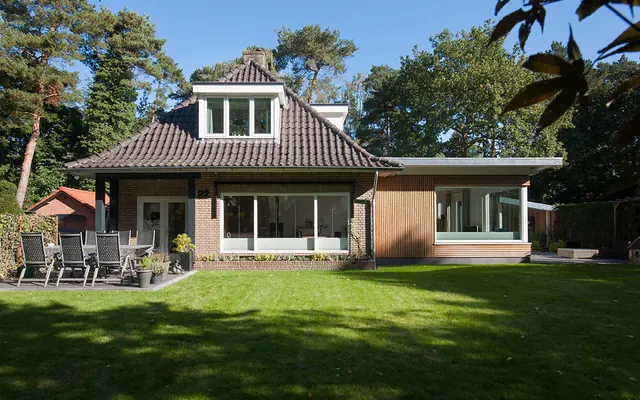
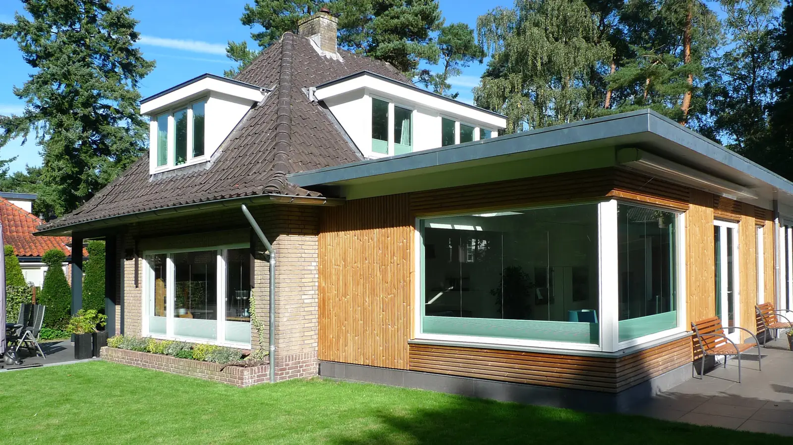
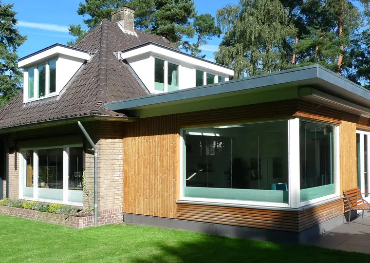
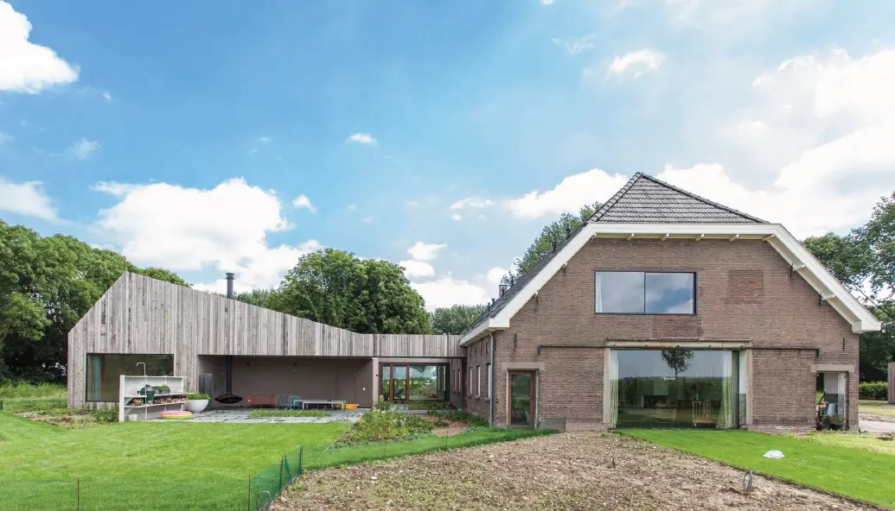
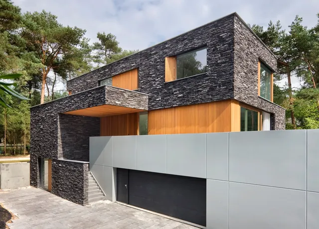
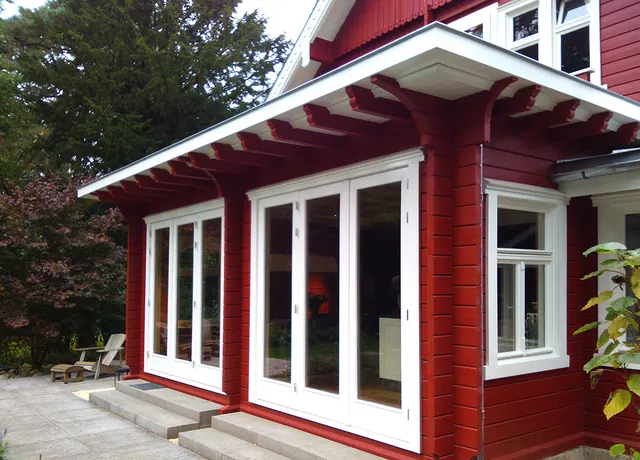
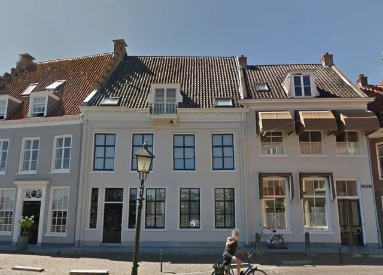
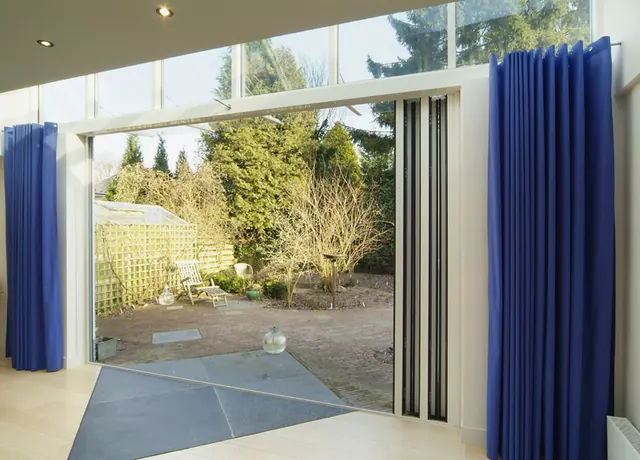
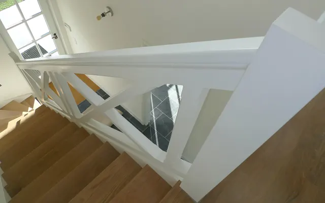

Bouwen en uitbreiden
Nieuwbouw, aan- en verbouw, restauratie en renovatie, en bedrijfspanden.


Nieuwbouw · Aan- en verbouw · Restauratie · Badkamers · Maatwerk uit eigen werkplaats · Bedrijfspanden
Sinds 1986 bouwt Van Rhenen vanuit een eigen werkplaats op Nijendal. Trappen, kasten en details maken we zelf. En afspraak is afspraak.
Liever eerst kennismaken? U bent welkom voor koffie op Nijendal 44.
Geen smoesjes of verhaaltjes.Rob over zijn nieuwbouwwoning · Google · oktober 2013 Lees de reviews op Google →
Een greep uit eigen werk: villa's, woonboerderijen, monumenten en maatwerk.





Groot of klein, voor particulieren en bedrijven.

Nieuwbouw, aan- en verbouw, restauratie en renovatie, en bedrijfspanden.

Badkamers, trappen en kasten uit de eigen werkplaats, en advies bij aankoop.
"Dit bedrijf is een aanrader. Ze hebben bij mij o.a. groot onderhoud aan het huis gedaan, douchecel vernieuwd, dubbel glas geplaatst en het gehele dak gerenoveerd. Peter van Rhenen denkt heel goed mee over wat er wel en wat er niet zinnig is en legt je duidelijke opties voor. De mensen van het team dat het werk komt uitvoeren zijn deskundig, prettig in de omgang en werken zorgvuldig en netjes."
"Al sinds 2007 zijn diverse werkzaamheden naar ALLE tevredenheid uitgevoerd! De kwaliteit is prima, maar wat ik zeker zeer sterk vind is dat de offerte transparant is. Zo ook de eventueel meerwerk wat er bij komt. Het gesprek daarbij verloopt heel soepel. Weinig kans op miscommunicatie! Verder wordt waargemaakt wat is afgesproken. Ook de termijn van uitvoering. Kortom: Wij zijn blij en zouden dus ook zeker weer terugkomen voor nieuwe klussen."
Vanaf de ontwerpfase tot en met de nazorg denken we met u mee.